读《Python深度学习（第2版）》-弗朗索瓦·肖莱 笔记
读《Python深度学习（第2版）》-弗朗索瓦·肖莱 笔记
第一章 什么是深度学习
人工智能 机器学习 深度学习中的关系
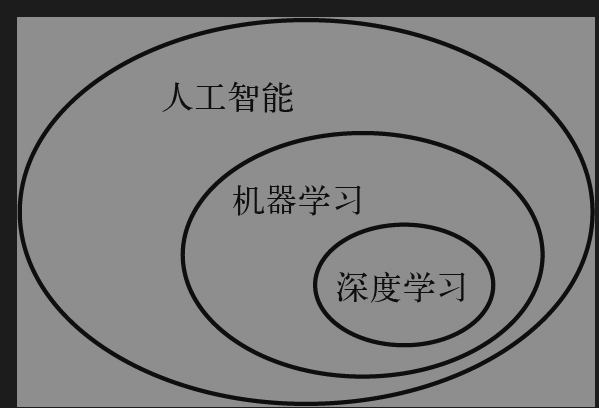
机器学习是一种新的编程范式：
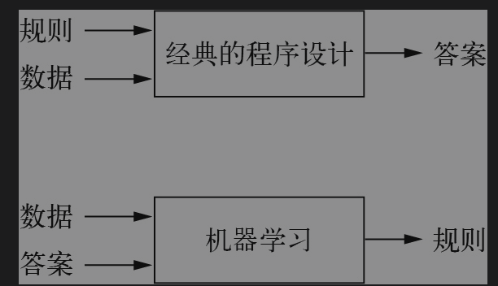
深度学习是机器学习的一个分支领域：它是从数据中学习表示的一种新方法，强调从连续的层中学习，这些层对应于越来越有意义的表示。深度学习之“深度”并不是说这种方法能够获取更深层次的理解，而是指一系列连续的表示层。数据模型所包含的层数被称为该模型的深度（depth）。这一领域的其他名称还有分层Å表示学习（layered representations learning）和层级表示学习（hierarchical representations learning）。
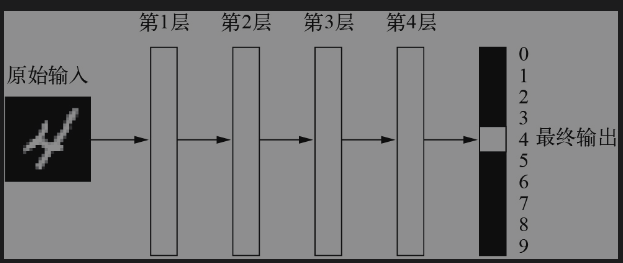
你可以将深度神经网络看作多级信息蒸馏（information distillation）过程：信息穿过连续的过滤器，其纯度越来越高（对任务的帮助越来越大）。
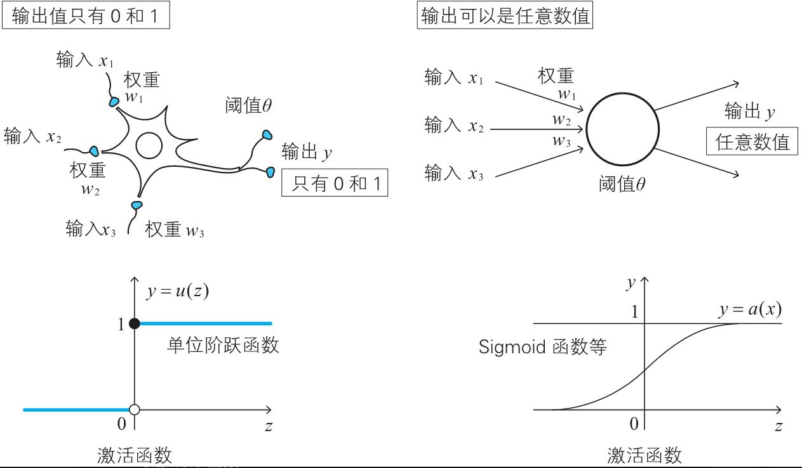
补充激活函数
1. Sigmoid函数：Sigmoid函数可以将任意的实数映射到0和1之间，使得输出可以解释为概率。它的公式为f(x) = 1 / (1 + e^-x)。但是，Sigmoid函数在输入值的绝对值很大的时候，会出现梯度消失的问题，这会导致网络训练困难。
2. Tanh函数：Tanh函数可以将任意的实数映射到-1和1之间。它的公式为f(x) = (e^x - e^-x) / (e^x + e^-x)。Tanh函数相比于Sigmoid函数，其输出以0为中心，这是一个很大的优点。但是，Tanh函数同样存在梯度消失的问题。
3. ReLU函数：ReLU（Rectified Linear Unit）函数是目前最常用的激活函数。它的公式为f(x) = max(0, x)。ReLU函数在x大于0时，梯度始终为1，因此不存在梯度消失的问题，从而可以加速神经网络的训练。但是，ReLU函数在x小于0时，梯度始终为0，这可能会导致神经元“死亡”，即无论输入如何，输出始终为0。
4. Leaky ReLU函数：Leaky ReLU函数是对ReLU函数的改进，它的公式为f(x) = max(0.01x, x)。这样，即使x小于0，Leaky ReLU的梯度也不会为0，从而可以缓解ReLU的“死亡”问题。
5. Softmax函数：Softmax函数通常用于多分类神经网络的输出层。它可以将一组数值映射为概率分布。其公式为f(x_j) = e^x_j / Σ(e^x_i)，其中i和j都是输入向量的索引。
三张图理解深度学习
每层对输入数据所做的具体操作保存在该层的权重（weight）中，权重实质上就是一串数字。用术语来讲，每层实现的变换由其权重来参数化（parameterize），如图1-7所示。权重有时也被称为该层的参数（parameter）。
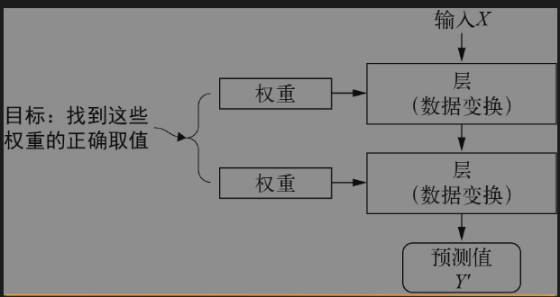
神经网络由其权重来参数化
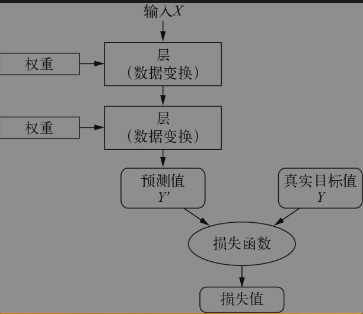
若要控制某个事物，首先需要能够观察它。若要控制神经网络的输出，需要能够衡量该输出与预期结果之间的距离。这是神经网络损失函数（loss function）的任务，该函数有时也被称为目标函数（objective function）或代价函数（cost function）。
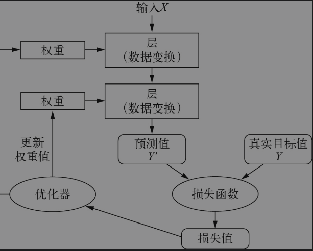
由于一开始对神经网络的权重进行随机赋值，因此神经网络仅实现了一系列随机变换，其输出值自然与理想结果相去甚远，相应地，损失值也很大。但是，神经网络每处理一个示例，权重值都会向着正确的方向微调，损失值也相应减小。这就是训练循环（training loop），将这种循环重复足够多的次数（通常是对数千个示例进行数十次迭代），得到的权重值可以使损失函数最小化
补充：学习率是一个超参数，用于控制神经网络权重调整的速度或步长。
第二章 神经网络的数学基础
-
神经网络层的作用: 你可以将层看成数据过滤器：进去一些数据，出来的数据变得更加有用
-
过拟合问题重要含义解释: 训练精度和测试精度之间的这种差距是过拟合（overfit）造成的。过拟合是指机器学习模型在新数据上的性能往往比在训练数据上要差。
-
梯度定义导数这一概念可以应用于任意函数，只要函数所对应的表面是连续且光滑的。张量运算（或张量函数）的导数叫作梯度。
-
梯度下降是驱动现代神经网络的优化方法，其要点如下。我们的模型用到的所有函数（比如dot或+）
，都以一种平滑、连续的方式对输入进行变换。举个例子，对于z = x + y，y的微小变化只会导致z的微小变化。如果你知道y的变化方向，就可以推断出z的变化方向。用数学语言来讲，这些函数是可微（differentiable）的。将这样的函数组合在一起，得到的函数仍然是可微的。
参数减少的方式：对于一个函数f(x)，你可以通过将x沿着导数的反方向移动一小步来减小f(x)的值。同样，对于一个张量函数f(W)，你也可以通过将W沿着梯度的反方向移动来减小loss_value =f(W)，比如W1 = W0 - step * grad(f(W0), W0)
- 链式法则 ：利用简单运算（如加法、relu或张量积）的导数，可以轻松计算出这些基本运算的任意复杂组合的梯度。重要的是，神经网络由许多链接在一起的张量运算组成，每个张量运算的导数都是已知的，且都很简单。例如，代码清单2-2定义的模型可以表示为，一个由变量W1、b1、W2和b2（分别属于第1个和第2个Dense层）参数化的函数，其中用到的基本运算是dot、relu、softmax和+，以及损失函数loss。这些运算都是很容易求导的。[插图]根据微积分的知识，这种函数链可以利用下面这个恒等式进行求导，它叫作链式法则（chain rule）。考虑两个函数f和g，以及它们的复合函数fg：fg(x) ==f(g(x))。[插图]链式法则规定：grad(y, x) == grad(y, x1) *grad(x1, x)。因此，只要知道f和g的导数，就可以求出fg的导数。如果添加更多的中间函数，看起来就像是一条链，因此得名链式法则。[插图]将链式法则应用于神经网络梯度值的计算，就得到了一种叫作反向传播的算法。我们来具体看一下它的工作原理。
链式法则（Chain Rule）是微积分中的一个重要工具，用于计算复合函数的导数,深度学习中的依赖的函数是复杂的，因此需要链式法则求导，寻找梯度下降。
假设有函数y=f(u)，u=g(x)，那么y是x的复合函数，记作y=f(g(x))。根据链式法则，y关于x的导数为：
dy/dx = dy/du * du/dx
也就是说，复合函数的导数等于内层函数相对于x的导数与外层函数相对于u的导数的乘积。
链式法则告诉我们，对于这个反向图，想求一个节点相对于另一个节点的导数，可以把连接这两个节点的路径上的每条边的导数相乘。
残差通常指的是实际观察值与模型预测值之间的差异
反向传播的基本步骤
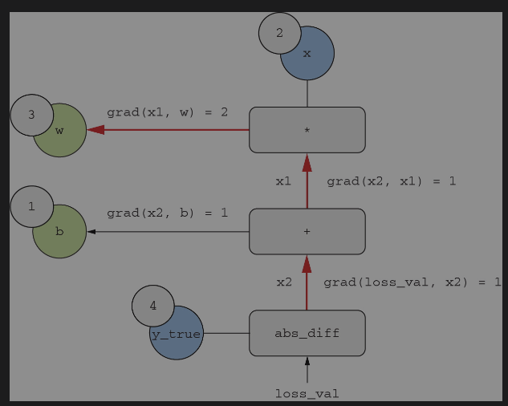
- 前向传播（Forward Pass）：将输入数据通过神经网络，计算每一层的输出，最终得到预测结果。
- 计算损失（Loss Calculation）：使用损失函数计算预测结果与真实标签之间的误差。
- 反向传播（Backward Pass）：从输出层开始，逐层向后计算损失函数相对于每个参数的梯度。
- 参数更新（Parameter Update）：使用梯度下降算法（如随机梯度下降，SGD）更新每个参数，使得损失函数逐渐减小。
示例
假设我们有一个简单的两层神经网络，输入层有两个节点，隐藏层有两个节点，输出层有一个节点。我们使用均方误差（MSE）作为损失函数。反向传播的过程如下：
- 前向传播：
计算隐藏层的输出。
计算输出层的输出。 - 计算损失：
计算预测值与真实值之间的误差。 - 反向传播：
计算输出层的梯度。
计算隐藏层的梯度。 - 参数更新：
使用梯度下降算法更新权重和偏置。
具体一些的示例
假设我们的神经网络只有一个输入节点x，一个隐藏层节点h，一个输出节点y_hat，隐藏层和输出层的激活函数都是sigmoid函数。权重和偏置分别为w1, b1（输入层到隐藏层）和w2, b2（隐藏层到输出层）。我们的目标值是y，损失函数是平方误差损失：L = (y - y_hat)^2。
前向传播过程如下：
h = sigmoid(w1 * x + b1)
y_hat = sigmoid(w2 * h + b2)
反向传播过程如下：
-
首先计算损失L关于y_hat的导数：dL/dy_hat= 2 * (y_hat - y)
-
然后计算y_hat关于w2, b2, h的导数：dy_hat/dw2 = h * sigmoid’(w2 * h + b2), dy_hat/db2 = sigmoid’(w2 * h + b2), dy_hat/dh = w2 * sigmoid’(w2 * h + b2)
-
接着计算h关于w1, b1的导数：dh/dw1 = x * sigmoid’(w1 * x + b1), dh/db1 = sigmoid’(w1 * x + b1)
-
最后，我们可以计算损失L关于权重和偏置的导数，以更新权重和偏置：
dL/dw2 = dL/dy_hat * dy_hat/dw2
dL/db2 = dL/dy_hat * dy_hat/db2
dL/dw1 = dL/dy_hat * dy_hat/dh * dh/dw1
dL/db1 = dL/dy_hat * dy_hat/dh * dh/db1
我们可以使用这些梯度来更新权重和偏置，通常我们会选择一个学习率，然后将权重和偏置减去对应梯度与学习率的乘积，即：
w2_new = w2 - learning_rate * dL/dw2
b2_new = b2 - learning_rate * dL/db2
w1_new = w1 - learning_rate * dL/dw1
b1_new = b1 - learning_rate * dL/db1
整个深度学习训练基本步骤
现在的深度学习库会帮我们包装好对应的函数，但是我们需要了解到对应的方法内的具体步骤。
- 数据准备
- 数据收集：收集用于训练和测试的输入数据和对应的标签。
- 数据预处理：对数据进行清洗、归一化、分割（训练集、验证集、测试集）等预处理操作。
- 模型初始化
- 模型架构设计：设计神经网络的结构，包括层数、每层的神经元数量、激活函数等。
- 参数初始化：初始化网络的权重和偏置，通常使用随机初始化方法。
- 前向传播（Forward Propagation）
- 计算输出：将输入数据通过神经网络，逐层计算每一层的输出，最终得到预测结果。
- 计算损失（Loss Calculation）
- 损失函数：使用损失函数计算预测结果与真实标签之间的误差。例如，常用的损失函数有均方误差（MSE）、交叉熵损失（Cross-Entropy Loss）等。
- 反向传播（Backward Propagation）
- 计算梯度：从输出层开始，逐层向后计算损失函数相对于每个参数的梯度。反向传播通过链式法则（Chain Rule）高效地计算这些梯度。
- 梯度存储：将计算得到的梯度存储起来，以便在参数更新时使用。
- 参数更新（Parameter Update）
- 优化算法：使用优化算法（如随机梯度下降，SGD，Adam等）更新每个参数，使得损失函数逐渐减小。参数更新的公式通常为：
[
\theta = \theta - \eta \cdot \nabla_\theta L
]
其中，(\theta) 是参数，(\eta) 是学习率，(\nabla_\theta L) 是损失函数相对于参数的梯度。
- 迭代训练
- 循环迭代：重复前向传播、计算损失、反向传播和参数更新的过程，直到达到预定的停止条件（如达到最大迭代次数或损失函数收敛）。
- 模型评估
- 验证集评估：在训练过程中，使用验证集评估模型的性能，以防止过拟合。
- 测试集评估：在训练完成后，使用测试集评估模型的最终性能。
- 模型保存与部署
这里目前各大厂都有自己的深度学习平台，会有自己的深度学习平台进行保存。
- 模型保存：将训练好的模型参数保存下来，以便后续使用。
- 模型部署：将模型部署到生产环境中，进行实际应用。
第3章 Keras和TensorFlow入门
为问题选择合适的损失函数，这是极其重要的。神经网络会采取各种方法使损失最小化，如果损失函数与成功完成当前任务不完全相关，那么神经网络最终的结果可能会不符合你的预期。
第4章 神经网络入门：分类与回归
你可以将表示空间的维度直观理解为“模型学习内部表示时所拥有的自由度”。单元越多（表示空间的维度越高），模型就能学到更加复杂的表示，但模型的计算代价也变得更大，并可能导致学到不必要的模式（这种模式可以提高在训练数据上的性能，但不会提高在测试数据上的性能）。
注意 不要将回归问题与logistic回归算法混为一谈。令人困惑的是，logistic回归不是回归算法，而是分类算法。
补充二元交叉熵
二元交叉熵（Binary Cross Entropy，简称BCE）是一种在二元分类问题中常用的损失函数。它是交叉熵损失函数在二元分类问题中的特殊形式。
二元交叉熵损失函数的公式如下：
L = -[y * log(p) + (1 - y) * log(1 - p)]
其中，y是真实标签（0或1），p是模型预测的概率（介于0和1之间）。
当真实标签y=1时，损失函数就变成了-log(p)，也就是说，如果模型预测的概率p接近1，损失就会接近0，如果模型预测的概率p接近0，损失就会变得非常大。
当真实标签y=0时，损失函数就变成了-log(1 - p)，也就是说，如果模型预测的概率p接近0，损失就会接近0，如果模型预测的概率p接近1，损失就会变得非常大。
因此，二元交叉熵损失函数可以有效地度量模型预测的概率和真实标签之间的一致性，是二元分类问题中的常用损失函数。
补充分类交叉熵
Categorical Cross Entropy（分类交叉熵）是一种在多类别分类问题中常用的损失函数。它是交叉熵损失函数在多类别分类问题中的应用。
分类交叉熵损失函数的公式如下：
L = - Σ [y_i * log(p_i)]
其中，y_i 是第i个类别的真实标签（通常用one-hot编码表示，即如果样本属于第i类，y_i为1，否则为0），p_i 是模型预测样本属于第i类的概率。
分类交叉熵损失函数的值越小，说明模型的预测结果越接近真实标签，模型的性能越好。当模型的预测结果完全正确时，分类交叉熵损失函数的值为0。
分类交叉熵损失函数可以有效地度量模型预测的概率分布和真实标签的概率分布之间的差距，因此在多类别分类问题中被广泛使用。
补充均方差
均方误差（Mean Squared Error，简称MSE）是一种常用的误差度量方式，主要用于回归问题。它衡量的是预测值与真实值之间差异的平方的平均值。
具体来说，假设我们有n个数据点，y_i 是第i个数据点的真实值，而 ŷ_i 是模型对第i个数据点的预测值，那么均方误差可以通过以下公式计算：
MSE = (1/n) Σ (y_i - ŷ_i)^2
其中，Σ表示对所有数据点求和。
均方误差的值越小，说明模型的预测结果越接近真实值，模型的性能越好。需要注意的是，由于均方误差对较大的误差给予了更大的惩罚（因为误差被平方了），所以它对异常值（outliers）非常敏感
平方误差和均方误差都是用来衡量预测值与真实值之间差异的度量方式，但它们的计算方式和含义有所不同。
平方误差（Squared Error）：对于单个数据点，平方误差是预测值与真实值之差的平方。如果我们有一个真实值 y 和一个预测值 ŷ，那么平方误差就是 (y - ŷ)^2。平方误差的主要目的是使得误差变为正值，并且对较大的误差给予更大的惩罚。
均方误差（Mean Squared Error，MSE）：均方误差是所有数据点的平方误差的平均值。假设我们有n个数据点，y_i 是第i个数据点的真实值，而 ŷ_i 是模型对第i个数据点的预测值，那么均方误差可以通过以下公式计算：MSE = (1/n) Σ (y_i - ŷ_i)^2。均方误差可以给我们提供一个整体的、平均的误差指标，用于衡量模型的整体预测性能。
总的来说，平方误差是单个数据点的误差度量，而均方误差是所有数据点误差的平均，通常用于评估整个模型的预测性能。
将取值范围差异很大的数据直接输入到神经网络中可能会导致一些问题，主要有以下几个原因：
-
梯度消失或梯度爆炸：神经网络的训练通常依赖于梯度下降或其变体。如果输入数据的范围差异很大，那么权重更新的梯度可能也会有很大的差异，这可能导致一些权重更新得很快，而另一些权重更新得很慢。在极端情况下，这可能导致梯度消失（权重更新太慢，导致训练进度缓慢）或梯度爆炸（权重更新太快，导致训练不稳定）。
-
不同特征的影响力不平衡：如果一个特征的取值范围远大于其他特征，那么在计算损失函数和梯度时，这个特征可能会占据主导地位，导致模型无法充分学习到其他特征的信息。
-
训练速度：如果输入数据的范围差异很大，可能需要更长的时间来找到合适的权重，这会导致训练速度变慢。
因此，在将数据输入到神经网络之前，通常需要进行预处理，如归一化或标准化，以确保所有特征的取值范围大致相同。这样可以帮助提高模型的训练稳定性和效率，同时也可以提高模型的性能。
原文：将取值范围差异很大的数据输入到神经网络中，这是有问题的。模型可能会自动适应这种取值范围不同的数据，但这肯定会让学习变得更加困难。
利用K折交叉验证来验证你的方法
◆ 对于向量数据，最常见的三类机器学习任务是：二分类问题、多分类问题和标量回归问题。本章每一节的“小结”都总结了你应从这些任务中学到的要点。回归问题使用的损失函数和评估指标都与分类问题不同。将原始数据输入神经网络之前，通常需要对其进行预处理。如果数据特征具有不同的取值范围，应该先进行预处理，对每个特征单独进行缩放。随着训练的进行，神经网络最终会过拟合，并在前所未见的数据上得到较差的结果。如果训练数据不是很多，那么可以使用只有一两个中间层的小模型，以避免严重的过拟合。如果数据被划分为多个类别，那么中间层过小可能会造成信息瓶颈。如果要处理的数据很少，那么K折交叉验证有助于可靠地评估模型。
第5章 机器学习基础
机器学习的根本问题在于优化与泛化之间的矛盾。优化（optimization）是指调节模型使其在训练数据上得到最佳性能的过程（对应机器学习中的学习），泛化（generalization）则是指训练好的模型在前所未见的数据上的性能。
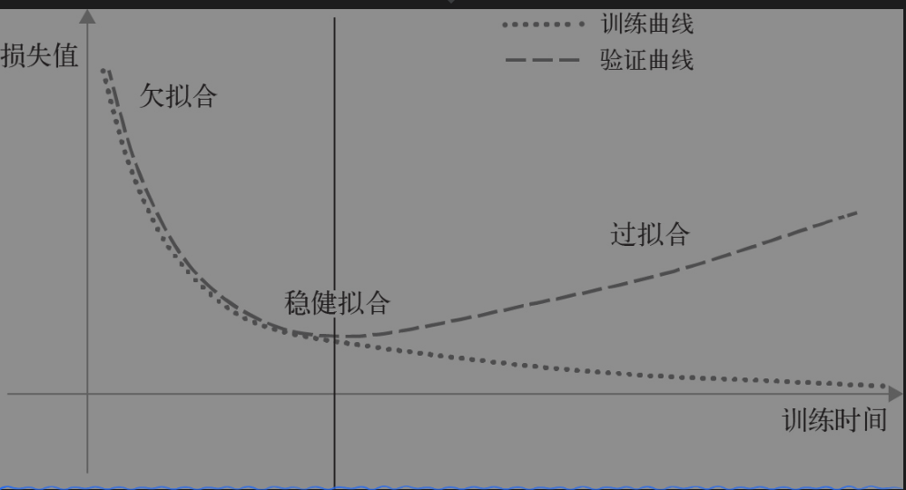
典型的过拟合情况训练开始时，优化和泛化是相关的：训练数据上的损失越小，测试数据上的损失也越小
噪声问题
数据一定程度上决定了模型的精度因此需要在训练数据前尽可能避免噪声：
原文：噪声特征不可避免会导致过拟合。因此，如果你不确定特征究竟是有用的还是无关紧要的，那么常见的做法是在训练前进行特征选择（feature selection）。
但泛化能力更多是自然数据结构的结果，而不是模型任何属性的结果
超参数定义
比如确定层数或每层大小、学习率［这些叫作模型的超参数（hyperparameter），以便与参数（权重）区分开］
如何改进模型的拟合
为了实现完美的拟合，你必须首先实现过拟合。由于事先并不知道界线在哪里，因此你必须穿过界线才能找到它。在开始处理一个问题时，你的初始目标是构建一个具有一定泛化能力并且能够过拟合的模型。得到这样一个模型之后，你的重点将是通过降低过拟合来提高泛化能力。
解决训练不开始，损失保持不变的问题:
原文：出现这种情况时，问题总是出在梯度下降过程的配置：优化器、模型权重初始值的分布、学习率或批量大小。所有这些参数都是相互依赖的，因此，保持其他参数不变，调节学习率和批量大小通常就足够了。
请记住，任何情况下应该都可以实现过拟合。与训练损失不下降的问题一样，这个问题也总是可以解决的。如果无法实现过拟合，可能是因为模型的表示能力（representational power）存在问题：你需要一个容量（capacity）更大的模型，也就是一个能够存储更多信息的模型。若要提高模型的表示能力，你可以添加更多的层、使用更大的层（拥有更多参数的层），或者使用更适合当前问题的层类型（也就是更好的架构预设）。
数据是重要的:
确保拥有足够的数据。请记住，你需要对输入−输出空间进行密集采样。利用更多的数据可以得到更好的模型。有时，一开始看起来无法解决的问题，在拥有更大的数据集之后就能得到解决。
特征工程
提高数据泛化能力为了解决过拟合
原文：提高数据泛化潜力的一个特别重要的方法就是特征工程
◆ 这就是特征工程的本质：用更简单的方式表述问题，从而使问题更容易解决。特征工程可以让潜在变得更平滑、更简单、更有条理征工程通常需要深入理解问题
对正则化的介绍
原文：正则化方法是一组最佳实践，可以主动降低模型完美拟合训练数据的能力，其目的是提高模型的验证性能。它之所以被称为模型的“正则化”，是因为它通常使模型变得更简单、更“规则”，曲线更平滑、更“通用”。因此，模型对训练集的针对性更弱，能够更好地近似数据的潜在流形，从而具有更强的泛化能力。
◆ 你已经知道，一个太小的模型不会过拟合。降低过拟合最简单的方法，就是缩减模型容量，即减少模型中可学习参数的个数（这由层数和每层单元个数决定）。如果模型的记忆资源有限，它就不能简单地记住训练数据；为了让损失最小化，它必须学会对目标有预测能力的压缩表示，这也正是我们感兴趣的数据表示。
同时请记住，你的模型应该具有足够多的参数，以防欠拟合，即模型应避免记忆资源不足。在容量过大和容量不足之间，要找到一个平衡点。不幸的是，没有一个魔法公式能够确定最佳层数或每层的最佳大小。你必须评估一系列不同的模型架构（当然是在验证集上评估，而不是测试集），以便为数据找到最佳的模型规模。要确定合适的模型规模，一般的工作流程是开始时选择相对较少的层和参数，然后逐渐增加层的大小或添加新层，直到这种增加对验证损失的影响变得很小。
◆ 降低过拟合的一种常见方法就是强制让模型权重只能取较小的值，从而限制模型的复杂度，这使得权重值的分布更加规则。这种方法叫作权重正则化（weight regularization），其实现方法是向模型损失函数中添加与较大权重值相关的成本（cost）。这种成本有两种形式。L1正则化：添加的成本与权重系数的绝对值（权重的L1范数）成正比。L2正则化：添加的成本与权重系数的平方（权重的L2范数）成正比。
L1正则化
当我们在损失函数中添加了L1正则化项λ|w|后，模型在训练过程中不仅要最小化预测误差，还要最小化权重w的绝对值之和。λ是一个超参数，控制着正则化项的强度。
如果λ设置得很大，那么正则化项的影响就会比预测误差更大。在这种情况下，为了最小化整体的损失函数，模型会倾向于让权重w尽可能小，甚至变为0，因为这样可以最大程度地减小正则化项λ|w|。
这就是为什么当λ足够大时，一些权重可能会变为0的原因。这种性质使得L1正则化可以用于特征选择，因为模型会自动将那些不重要的特征（对应的权重为0）忽略掉。
需要注意的是，如果λ设置得过大，可能会导致模型过于简单（即大部分权重都为0），从而导致欠拟合。因此，选择合适的λ值是很重要的。
L2 正则化
◆ 神经网络的L2正则化也叫作权重衰减（weight decay）。不要被不同的名称迷惑，权重衰减与L2正则化在数学上是完全相同的。在Keras中，添加权重正则化的方法是向层中传入权重正则化项实例（weight regularizer instance）作为关键字参数。
L2正则化也被称为权重衰减或岭回归。它是一种用于防止过拟合的技术，通过在损失函数中添加一个正则项来约束模型的复杂度。
具体来说，如果我们的原始损失函数是L，那么加入L2正则化后的损失函数L’就变成了：
L’ = L + λ * ||w||^2
其中，λ是正则化强度，是一个超参数；||w||^2是权重w的L2范数的平方，即权重w各元素的平方和。
L2正则化的效果是使得权重w向0靠近，但不会变为0。这是因为，为了最小化L’，模型需要在保证预测准确的同时，尽量减小权重的大小。这样可以防止模型过于依赖某个特征，从而提高模型的泛化能力。
与L1正则化相比，L2正则化得到的模型更加平滑，而且不会产生稀疏解。这是因为L2正则化对大的权重进行了更大的惩罚，所以模型会倾向于让所有的权重都尽可能小，而不是让一部分权重为0，一部分权重很大。
droput正则化
◆ 请注意，权重正则化更常用于较小的深度学习模型。大型深度学习模型往往是过度参数化的，限制权重值大小对模型容量和泛化能力没有太大影响。在这种情况下，应首选另一种正则化方法：dropout。
◆ dropout是神经网络最常用且最有效的正则化方法之一，它由多伦多大学的Geoffrey Hinton和他的学生开发。对某一层使用dropout，就是在训练过程中随机舍弃该层的一些输出特征（将其设为0）。比方说，某一层在训练过程中对给定输入样本的返回值应该是向量[0.2, 0.5, 1.3, 0.8, 1.1]。使用dropout之后，这个向量会有随机几个元素变为0，比如变为[0, 0.5, 1.3,0, 1.1]。dropout比率（dropout rate）是指被设为0的特征所占的比例，它通常介于0.2～0.5
小结
机器学习模型的目的在于泛化，即在前所未见的输入上表现良好。这看起来不难，但实现起来很难。深度神经网络实现泛化的方式是：学习一个参数化模型，这个模型可以成功地在训练样本之间进行插值——这样的模型学会了训练数据的“潜在流形”。这就是为什么深度学习模型只能理解与训练数据非常接近的输入。机器学习的根本问题是优化与泛化之间的矛盾：为了实现泛化，你必须首先实现对训练数据的良好拟合，但改进模型对训练数据的拟合，在一段时间之后将不可避免地降低泛化能力。深度学习的所有最佳实践都旨在解决这一矛盾。深度学习模型的泛化能力来自于这样一个事实：模型努力逼近数据的潜在流形，从而通过插值来理解新的输入。
第6章 机器学习的通用工作流程
工作流程与第一章节讲的基本一致.
推断模型优化
◆ 简单的留出验证：数据量很大时可以采用这种方法。K折交叉验证：如果留出验证的样本太少，无法保证可靠性，则应该使用这种方法。重复K折交叉验证：如果可用的数据很少，同时模型评估又需要非常准确，则应该使用这种方法。从三种方法中选择一种即可。大多数情况下，第一种方法就足以得到很好的效果。不过要始终注意验证集的代表性，并注意在训练集和验证集之间不要存在冗余样本。
◆ 权重剪枝（weight pruning）。权重张量中的每个元素对预测结果的贡献并不相同。仅保留那些最重要的参数，可以大大减少模型的参数个数。这种方法减少了模型占用的内存资源和计算资源，而且在性能指标方面的代价很小。你可以决定剪枝的范围，从而控制模型大小与精度之间的平衡。权重量化（weight quantization）。深度学习模型使用单精度浮点（float32）权重进行训练。但是可以将权重量化为8位有符号整数（int8），这样得到的推断模型大小只有原始模型的四分之一，但精度仍与原始模型相当。
第7章 深入Keras
内置的fit()工作流程只针对于监督学习（supervised learning）。监督学习是指，已知与输入数据相关联的目标（也叫标签或注释），将损失计算为这些目标和模型预测值的函数。然而，并非所有机器学习任务都属于这个类别。还有一些机器学习任务没有明确的目标，比如生成式学习（generative learning，第12章将介绍）、自监督学习（self-supervised learning，目标是从输入中得到的）和强化学习（reinforcement learning，学习由偶尔的“奖励”驱动，就像训练狗一样）。即使是常规的监督学习，研究人员也可能想添加一些新奇的附加功能，需要用到低阶灵活性。
第8章 计算机视觉深度学习入门
卷积运算
◆ Dense层与卷积层的根本区别在于，Dense层从输入特征空间中学到的是全局模式（比如对于MNIST数字，全局模式就是涉及所有
◆ 像素的模式），而卷积层学到的是局部模式（对于图像来说，局部模式就是在输入图像的二维小窗口中发现的模式）
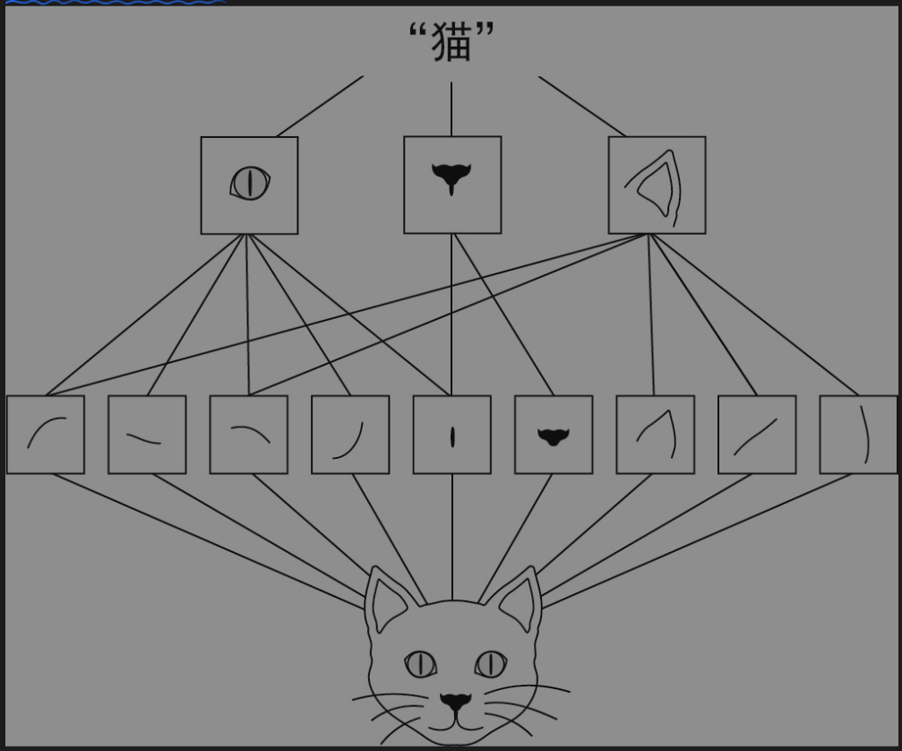
◆ 卷积神经网络学到的模式具有平移不变性（translation invariant）。在图片右下角学到某个模式之后，卷积神经网络可以在任何位置（比如左上角）识别出这个模式。
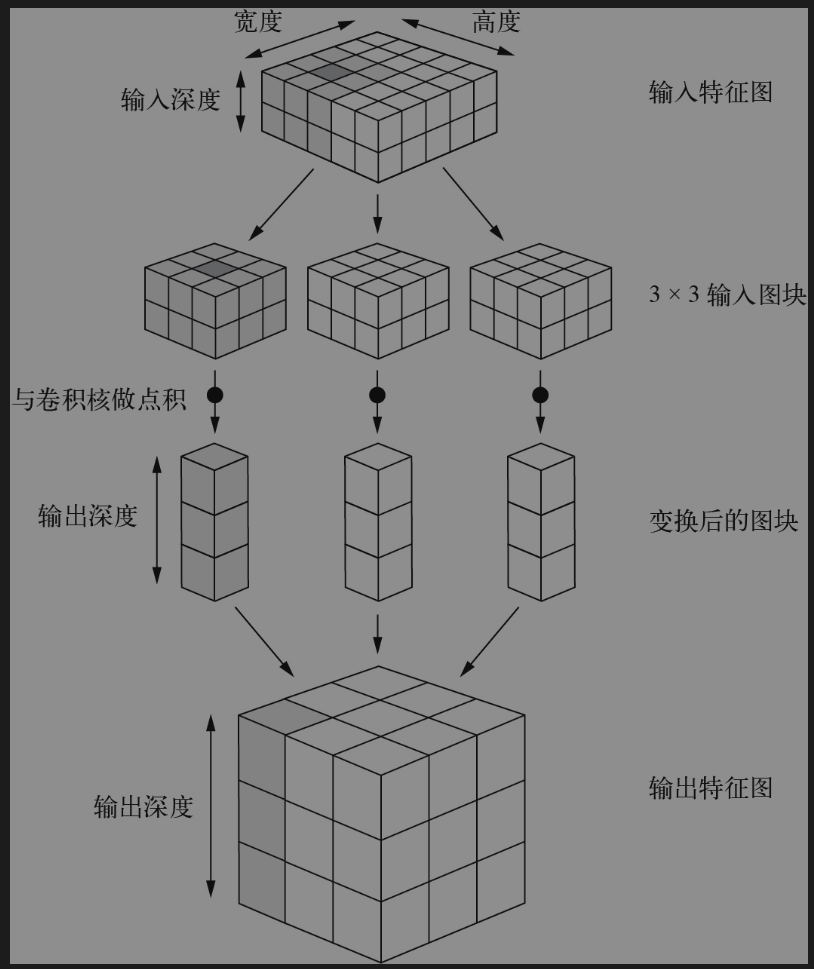
◆ 卷积神经网络可以学到模式的空间层次结构（spatial hierarchies of patterns）。第一个卷积层学习较小的局部模式（比如边缘），第二个卷积层学习由第一层特征组成的更大的模式，以此类推，如图8-2所示。这使得卷积神经网络能够有效地学习越来越复杂、越来越抽象的视觉概念，因为视觉世界本质上具有空间层次结构
◆ 深度轴的不同通道不再像RGB那样代表某种颜色，而是代表滤波器（filter）
最大汇聚运算
最大汇聚运算（Max Pooling）是深度学习中常用的一种运算，特别是在卷积神经网络（Convolutional Neural Networks，CNN）中。它的主要作用是进行特征降维和抽取重要特征。
最大汇聚运算的工作原理是在输入特征的滑动窗口（通常是2x2或3x3的窗口）中取最大值作为该窗口的代表，然后将这些最大值组成新的下一层特征图。这样做的好处有以下几点：
降维: 最大汇聚运算可以减少网络的参数数量，从而减少计算量和内存使用，也可以防止过拟合。
不变性: 最大汇聚运算具有一定的平移不变性。也就是说，即使输入的特征有轻微的平移，最大汇聚运算的结果也不会改变太多。这对于图像识别等任务非常有用，因为我们希望模型能够识别的对象不受其在图像中位置的影响。
特征抽取: 最大汇聚运算可以抽取出局部特征中最显著的特征，忽略不重要的信息。这有助于提取出更有意义的特征，提高模型的性能。
第9章 计算机视觉深度学习进阶
模型前半部分与用于图像分类的卷积神经网络非常相似，二者都是多个Conv2D层的堆叠，滤波器的数量逐渐增加。我们对图像进行3次2倍下采样，最终激活尺寸为(25, 25, 256)。前半部分的目的是将图像编码为较小的特征图，其中每个空间位置（或像素）都包含原始图像中较大空间的信息。你可以将它理解为一种压缩操作。
◆ 因此，虽然最大汇聚层在分类任务中表现很好，但在分割任务中会对性能造成很大影响
◆ 要让一个复杂系统变得简单，有一种通用的方法：只需将无定形的复杂内容构建为模块（module），将模块组织成层次结构（hierarchy），并多次复用（reuse）相同的模块（这里的“复用”是“抽象”的另一种表述）。这就是MHR方法，在所有使用“架构”一词的领域，它几乎都是系统架构的基础。
梯度消失问题
深度学习中的梯度消失问题主要是由于在反向传播过程中，梯度经过多层的连续乘积，可能导致梯度的值变得非常小，甚至接近于零，这就是所谓的"梯度消失"。这个问题在深度神经网络中尤其严重，因为网络的层数越多，梯度消失的问题就越明显。
具体来说，梯度消失问题的原因主要有以下几点：
激活函数的选择：一些常用的激活函数，如sigmoid和tanh，它们的输出都在(-1,1)或(0,1)之间，而它们的梯度在输入远离0时会接近于0。因此，当这些激活函数的输入值的绝对值很大时，它们的梯度就会接近于0，导致梯度消失。
权重初始化的问题：如果网络的权重初始化得不好，例如所有权重都初始化为很小的值，那么在反向传播过程中，梯度也会变得非常小，导致梯度消失。
网络结构的问题：深度神经网络的层数越多，梯度消失的问题就越严重。这是因为在反向传播过程中，梯度需要经过多层的连续乘积，如果这些乘积都小于1，那么梯度就会随着层数的增加而指数级地减小。
为了解决梯度消失的问题，研究者们提出了很多方法，如使用ReLU等不会导致梯度消失的激活函数，使用预训练和逐层初始化等更好的权重初始化方法，以及使用残差网络（ResNet）等可以缓解梯度消失的网络结构
如果函数链太长，那么这些噪声会盖过梯度信息，反向传播就会停止工作，模型也就根本无法训练。这就是梯度消失
残差链接
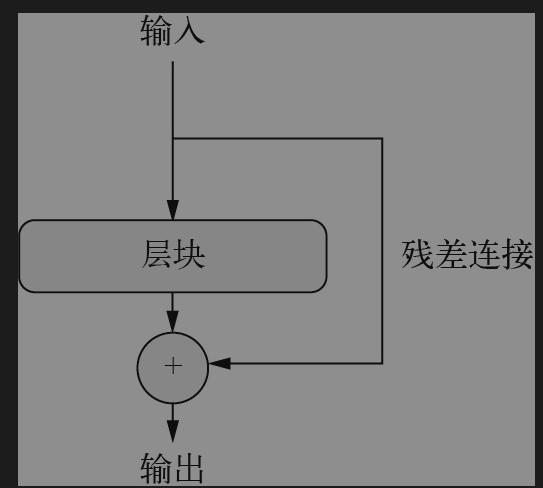
只需强制要求链中的每个函数都是无损的，即能够保留前一个输入中所包含的信息（不含噪声）。实现这一点的最简单的方法是使用残差连接。具体实现很简单：只需将一层或一个层块的输入添加到它的输出中，利用残差连接，你可以构建任意深度的神经网络，而无须担心梯度消失问题。
◆ 深度学习可以处理三项基本的计算机视觉任务：图像分类、图像分割和目标检测。遵循现代卷积神经网络架构的最佳实践，有助于充分发挥模型的作用。一些最佳实践包括使用残差连接、批量规范化和深度可分离卷积。卷积神经网络学习的表示很容易可视化，也就是说，卷积神经网络不是黑盒子。你既可以将卷积神经网络学到的滤波器可视化，也可以将类激活热力图可视化。
第10章 深度学习处理时间序列
时间序列（timeseries）是指定期测量获得的任意数据，比如每日股价、城市每小时耗电量或商店每周销售额。无论是自然现象（如地震活动、鱼类种群的演变或某地天气）还是人类活动模式（如网站访问者、国家GDP或信用卡交易），时间序列都无处不在。与前面遇到的数据类型不同，处理时间序列需要了解系统的动力学（dynamics），包括系统的周期性循环、系统随时间如何变化、系统的周期规律与突然激增等。
◆ 处理时间序列时，你会遇到许多特定领域的数据表示方法。例如，你可能听说过傅里叶变换，它是指将一系列值表示为不同频率的波的叠加。对那些以周期和振荡为主要特征的数据（如声音、摩天大楼的振动或人的脑电波）进行预处理时，傅里叶变换可以发挥很大作用。对于深度学习而言，傅里叶分析（或相关的梅尔频率分析）与其他特定领域的表示可以用来做特征工程。这是一种在训练模型之前准备数据的方式，以便让模型更容易运行
RNN基础结构
RNN采用相同的原理（不过是一个极其简化的版本）。它处理序列的方式是：遍历所有序列元素，同时保存一个状态（state），其中包含与已查看内容相关的信息。实际上，RNN是一种具有内部环路（loop）的神经网络.
◆ 它是一个序列，其中因果关系和顺序都很重要。
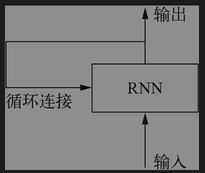
LSTM结构
LSTM通过引入门控机制（包括输入门、遗忘门和输出门）和细胞状态（cell state）来解决这个问题。细胞状态是一种在时间步之间传递的信息，可以视为LSTM的“长期记忆”，而隐藏状态则可以视为“短期记忆”。门控机制则决定了什么信息会被遗忘，什么信息会被更新，以及什么信息会被输出。
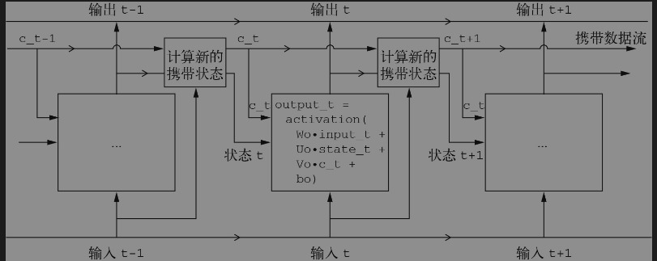
◆ 这其实就是LSTM的原理：保存信息以便后续使用，从而防止较早的信号在处理过程中逐渐消失。这应该会让你想到第9章介绍过的残差连接，二者的思路几乎相同.
◆ 这种约束的选择（如何实现RNN单元）最好留给优化算法来完成（比如遗传算法或强化学习过程），而不是让人类工程师来完成。那将是未来我们构建模型的方式。总之，你不需要理解LSTM单元的具体架构。作为人类，你不需要理解它，而只需记住LSTM单元的作用：允许过去的信息稍后重新进入，从而解决梯度消失问题。
降低过拟合
◆ 循环dropout（recurrent dropout）：这是dropout的一种变体，用于在循环层中降低过拟合。循环层堆叠（stacking recurrent layers）：这会提高模型的表示能力（代价是更大的计算量）。双向循环层（bidirectional recurrent layer）：它会将相同的信息以不同的方式呈现给RNN，可以提高精度并缓解遗忘问题。
◆ 。你已经熟悉了降低过拟合的经典方法——dropout，即让某一层的输入单元随机为0，其目的是破坏该层训练数据中的偶然相关性
第11章 深度学习处理文本
TF-IDF
◆ 最佳实践是一种叫作TF-IDF规范化（TF-IDF normalization）的方法。TF-IDF的含义是“词频–逆文档频次”。
词嵌入
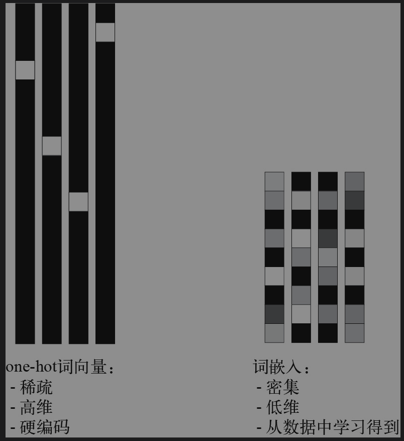
词向量
Transformer架构
多头注意力机制
◆ 多头”是指：自注意力层的输出空间被分解为一组独立的子空间，对这些子空间分别进行学习，也就是说，初始的查询、键和值分别通过3组独立的密集投影，生成3个独立的向量。每个向量都通过神经注意力进行处理，然后将多个输出拼接为一个输出序列。
对于任意足够深的架构，残差连接都是必需的
◆ 2017年，我和我的团队系统分析了各种文本分类方法在不同类型的文本数据集上的性能。我们发现了一个显著、令人惊讶的经验法则，可用于决定应该使用词袋模型还是序列模型——它是一个黄金常数。事实证明，在处理新的文本分类任务时，你应该密切关注训练数据中的样本数与每个样本的平均词数之间的比例，如图11-11所示。如果这个比例很小（小于1500），那么二元语法模型的性能会更好（它还有一个优点，那就是训练速度和迭代速度更快）。如果这个比例大于1500，那么应该使用序列模型。换句话说，如果拥有大量可用的训练数据，并且每个样本相对较短，那么序列模型的效果更好。
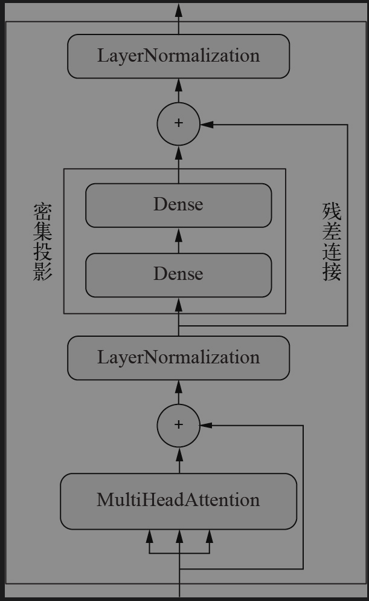
◆ 源序列表示必须完整保存在编码器状态向量中，这极大地限制了待翻译句子的长度和复杂度。这有点像一个人完全凭记忆翻译一句话，并且在翻译时只能看一次源句子。RNN很难处理非常长的序列，因为它会逐渐忘记过去。等到处理序列中的第100个词元时，模型关于序列开始的信息已经几乎没有了。这意味着基于RNN的模型无法保存长期上下文，而这对于翻译长文档而言至关重要
◆ 因果填充对于成功训练序列到序列Transformer来说至关重要。RNN查看输入的方式是每次只查看一个时间步，因此只能通过查看第0～N个时间步来生成输出第N个时间步（目标序列的第N+1个词元）。与RNN不同，TransformerDecoder是不考虑顺序的，它一次性查看整个目标序列。如果它可以读取整个输入，那么它只需学习将输入的第N+1个时间步复制到输出中的第N个位置即可。这样的模型可以达到完美的训练精度，但在推断过程中，它显然是完全没有用的，因为它无法读取大于N的输入时间步。
◆ 自然语言处理（NLP）模型有两类：一类是词袋模型，它可以处理一组单词或N元语法，而不考虑其顺序；另一类是考虑词序的序列模型。词袋模型由多个Dense层组成，而序列模型可以是RNN、一维卷积神经网络或Transformer。
第13章 适合现实世界的最佳实践
优化措施
◆ 这些架构层面的参数叫作超参数（hyperparameter），以便与模型的参数（parameter）区分开来，后者是通过反向传播进行训练得到的。
不同模型的集成通常可以显著提高预测质量。你可以使用混合精度来提高GPU上的模型训练速度。这种方法几乎没有成本，并且通常可以带来很好的速度提升。
第14章 总结
机器学习工作流程
1)定义任务。有哪些数据可用？你想预测什么？你是否需要收集更多数据，或者雇人为数据集手动添加标签？
(2)找到能够可靠评估目标成功的方法。对于简单任务，可以用预测精度，但在很多情况下需要与领域相关的复杂指标。
(3)准备用于评估模型的验证过程。特别是，你应该定义训练集、验证集和测试集。验证集和测试集的标签不应该泄露到训练数据中。举个例子，对于时序预测，验证数据和测试数据的时间都应该在训练数据之后。
(4)数据向量化。将数据转换为向量并预处理，使其更容易被神经网络所处理（数据规范化等）。
(5)开发第一个模型，它要超越基于常识的简单基准，从而证明机器学习适用于你的任务。事实并非总是如此！
(6)通过调节超参数和添加正则化来逐步改进模型架构。一定要根据模型在验证集（而不是测试集或训练集）上的性能来改进模型。请记住，你应该先让模型过拟合（从而找到比需求更大的模型容量），然后再开始添加正则化或减小模型规模。调节超参数时要注意验证集过拟合，即超参数可能会过于针对验证集而优化。我们保留一个单独的测试集，正是为了避免这种情况。
(7)在生产环境中部署最终模型。
关键网络架构
1.向量数据：密集连接网络（Dense层）。
2.图像数据：二维卷积神经网络。
3.序列数据：对于时间序列，选择循环神经网络（RNN）；对于离散序列（比如单词序列），选择Transformer。一维卷积神经网络也可用于平移不变的连续序列数据，比如鸟鸣波形。
4.视频数据：三维卷积神经网络（假设需要捕捉运动效果），或者帧级二维卷积神经网络（用于特征提取）再加上序列处理模型。
5.立体数据：三维卷积神经网络。
总结
读完整本书,了解了深度学习的一些核心概念:神经网络是如何构建的,如何随着梯度寻找极值,什么超参数什么是参数等等,以及如何处理梯度消失,梯度爆炸,过拟合,欠拟合问题实际生产过程中需要面对的问题.唯一的遗憾是没有使用这本书的案例进行实际的编码,下本书会进行实际操作《机器学习实战》。整体上是一本不错的书,推荐大家阅读.